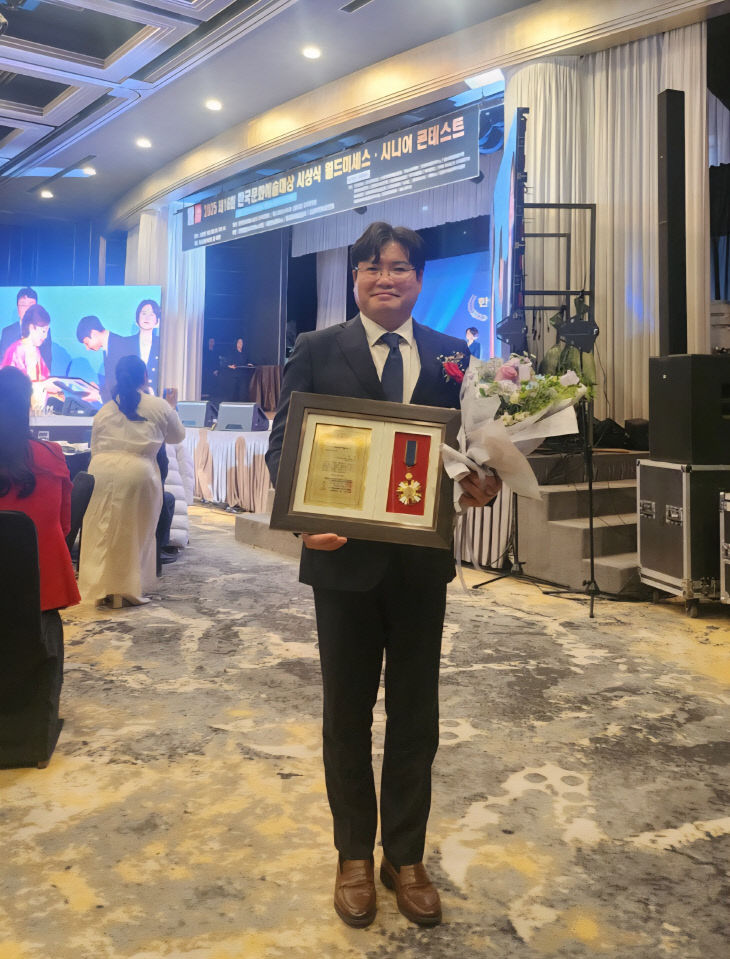

더불어민주당
|
부산진구청장 예비후보

이상호
기본사회가 강한 도시
진짜 사람중심 부산진구
기본사회가 강한 도시
진짜 사람중심 부산진구
"모든 구민이 삶의 기본을 보장받고,
행정이 생활 속에서 작동하는 도시를 만들겠습니다."
더불어민주당 정책위원회 부의장
경제수석실 · 일자리수석실
더불어민주당 당 대표 1급 포상 수상
모든 구민이 삶의 기본을 보장받는 부산진구
경제는 기회로! 골목경제 살리기
행정은 참여로! 생활 속 민주주의
배움과 문화가 넘치는 부산진구
안심하고 살 수 있는 부산진구


더불어민주당 6·3 지방선거 부산 구청장 출마 예정자들

"변명 말고 시민 앞에 투명하게 해명하라"

선거사무소를 방문한 당원들과 함께

정진우·이상호·전원석 공동 기자회견